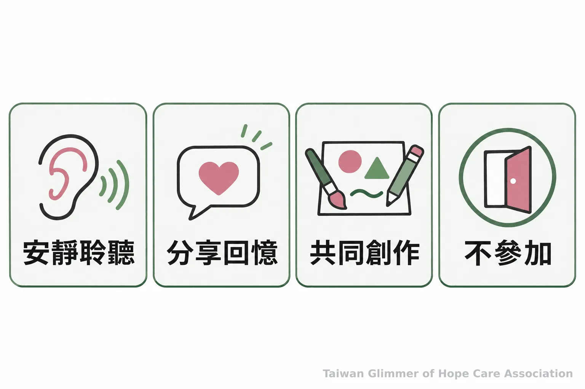
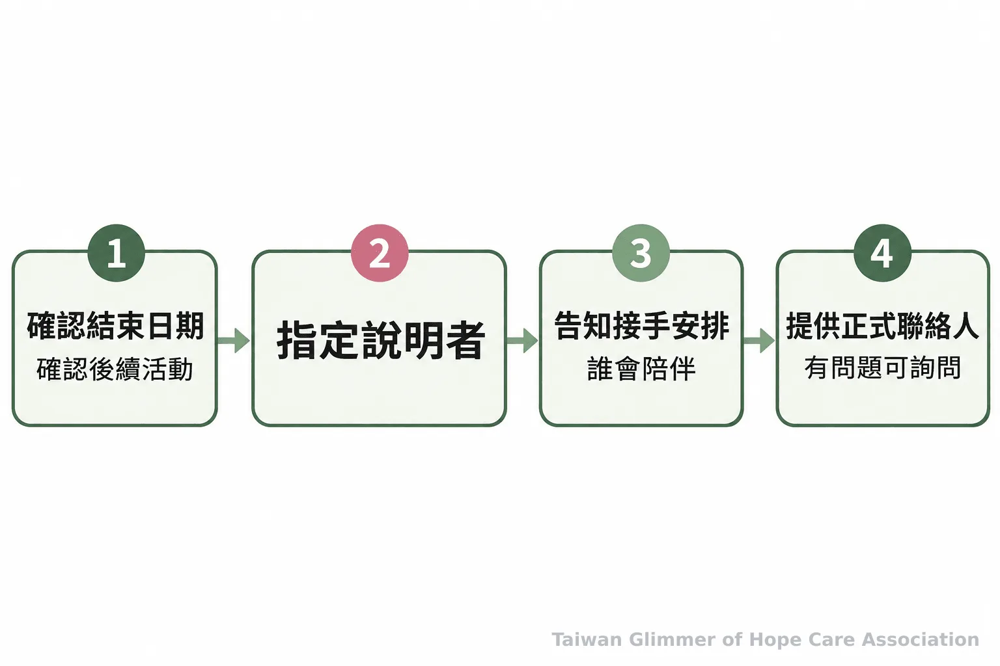

志工離開時如何向孩子告別？據點預告與交接做法
志工或兒少課程即將告一段落，據點可以怎麼預告、安排孩子參與告別，並說清楚接下來由誰陪伴？整理可實行的溝通與交接原則，並介紹微光的藝術陪伴課程。
最後一堂課快到了，志工離開時要怎麼向孩子說明？陪伴者或課程改變可能帶來疑問。據點可以先說清楚時間、原因與後續安排，再讓孩子選擇如何參與告別。每個孩子反應不同，沒有一種儀式適合所有人。
英國衛生與社會照護部的創傷知情實務指引，把安全、信任、選擇與合作列為重要原則，也提醒工作者交代正在做什麼、為什麼這麼做。這些原則可作為據點溝通參考，仍須按孩子情況安排，不應視作個別治療建議。更多創傷知情陪伴的安全原則也整理了成人如何提供清楚、可預期的支持。
一、結束前先說明時間與原因
確認服務或課程將結束後，就用孩子聽得懂的時間提示說明，並在最後幾次活動重複提醒。
「下個月結束」對年紀較小的孩子可能不夠具體。可以說「我們還會一起上兩次課，第二次就是最後一堂」，並在行事曆標出日期。日期未定，就說明已知部分和更新時間；安排有變，由熟悉的大人儘快補充。
原因說到孩子需要知道的程度即可，例如服務時間告一段落或課程安排調整。成人的私人困難不必交由孩子承擔，也不要讓孩子以為表現更好就能讓志工留下。說明時保持直接、平穩。
二、讓告別有選擇，不規定孩子怎麼感受
保留熟悉的活動，再提供簡單的回顧或創作選項；孩子可以分享，也可以安靜參與或不參加。
最後一次活動可以共同完成作品、寫祝福卡，或回顧一起做過的事。先說明有哪些選擇，讓孩子決定是否加入、是否說話。孩子可能高興、沉默或不想參加，成人不必替反應下定論。
若作品要帶回、展示或留存，先說清楚保管與用途，尊重孩子意願和隱私。畫畫、手作可以作為陪伴與表達，不能用作品判定孩子的經歷、情緒或是否受虐。微光曾以藝術家作品帶出情緒主題，沒有標準答案，也不比較技巧；兒少藝術活動安全設計可供規劃參考。

三、把接下來的安排交代清楚
由熟悉的據點同工說明課程是否繼續、誰會接手，以及孩子接下來可以向哪位成人詢問。
原志工與同工先確認最後日期、後續活動及說明者，再向孩子交代。服務由其他同工延續，就說明下次活動時間與接手者；活動結束，也直接告知。沒有安排時，不用「以後一定會再見」安慰孩子。
志工若因突發狀況無法告別，據點負責人可盡快補充已確認的消息，不編造原因，也不要求孩子保密。孩子詢問私下聯絡時，依據點兒少安全規範回應，不倉促承諾。兒少陪伴中的角色分工可供同工參考。

「機構和工作人員應說明正在做什麼，以及為什麼這麼做。」— 英國衛生與社會照護部《創傷知情實務工作定義》（譯）
四、微光據點以每月藝術陪伴課創造熟悉節奏
微光與在地單位合作開設藝術陪伴課，每個據點每月一堂，透過作品和情緒主題讓孩子參與活動與表達。
微光採「在地小衛星」方式走進既有的在地單位：瑞芳與愛鄰希望關懷協會合作，是第一個兒童繪畫班的起點；板橋明穗教會與中壢宣愛社區關懷協會也是合作據點。每個據點每月一堂藝術陪伴課，從藝術家作品帶入主題，例如以「心情的顏色」畫秘密花園，或借夏卡爾的夢想花園談壓力。孩子可用自己的方式完成作品，沒有標準答案，也不比較技巧。
這些藝術活動屬於陪伴與表達，不等同藝術治療，也不會用作品診斷孩子。據點課程的具體日期與活動紀錄，可見〈桃園第一個據點開課：中壢宣愛「心情的顏色」〉與〈瑞芳愛鄰據點：跟著夏卡爾，飛進我的夢想花園〉。
五、據點同工可以先確認三件事
先確認何時告知、最後幾次活動怎麼安排，以及由誰向孩子說明後續。
- 定下已知的結束日期，整理能說明的原因與尚未確定的安排。
- 指定熟悉的成人負責預告，並在最後幾次活動提醒孩子。
- 提供可選擇的告別方式，再明確說明接手者或服務結束後的安排。
- 提前說明時間與原因，並在最後幾次活動重複提醒。
- 告別方式保持簡單、可選擇，不要求孩子表達特定情緒。
- 交代接手者或服務結束安排；疑似兒少受害可撥 113，立即危險撥 110。
孩子不想告別時，不必追問；維持日常活動並清楚說明即可。志工臨時離開，就由熟悉同工補上消息。這週可邀老師與志工確認日期、告別安排和說明者，讓孩子知道接下來找誰。
常見問題
不想參加、詢問是否再見或擔心做錯事時，成人都可以用已確認的安排平穩回應。
Q1：孩子不想參加告別活動，怎麼辦？
尊重孩子不參加的選擇。可以讓他照常參與其他活動，再由熟悉同工簡短說明接下來的安排。
Q2：孩子問志工何時會回來，該怎麼回答？
只說已確認的事。未來沒有安排，就坦白說目前不知道，不用承諾再次見面。
Q3：志工離開後可以私下聯絡孩子嗎？
依據點的兒少安全規範處理，不自行交換私人帳號；由負責同工說明合適的聯絡方式。
Q4：可以怎麼安排最後一次告別？
不需要大型儀式。清楚預告、提供參與選擇並交代後續，已能讓孩子理解變化。
Q5：發現兒少疑似受害或有立即危險時怎麼辦？
疑似兒少保護事件可撥 113 諮詢或通報；若有立即人身安全危險，先撥 110。一般民眾與志工不自行查案或判定責任。
求助資訊
衛生福利部保護服務司的 113 保護專線全年 24 小時服務；有立即人身安全危險時，先撥 110。
衛福部說明，113 可受理兒童及少年保護事件通報或求助諮詢，全國民眾可使用；若有人身安全立即危險，應先撥 110。將疑慮交由正式管道處理，不自行調查或要求孩子反覆陳述。
參考文獻
創傷知情原則與求助方式，分別參照英國政府及衛福部公開資料。
- Department of Health and Social Care. (2022). Working definition of trauma-informed practice. GOV.UK. https://www.gov.uk/government/publications/working-definition-of-trauma-informed-practice/working-definition-of-trauma-informed-practice
- 衛生福利部保護服務司. (2026). 113保護專線介紹. https://dep.mohw.gov.tw/DOPs/cp-1183-6499-105.html
本文同步刊於 appi.news。